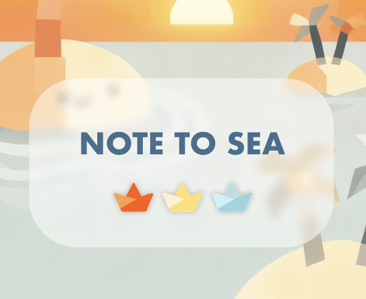
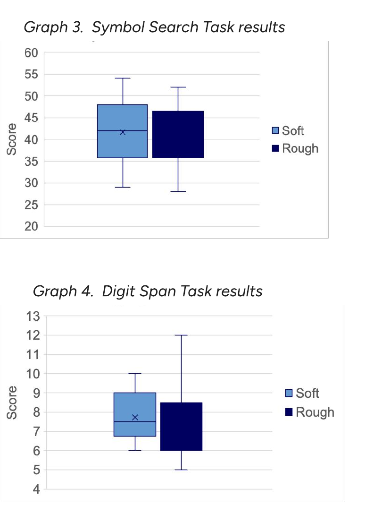

Interactive Media · Sound · Research
Interdisciplinary researcher and designer bridging audio programming with cognitive psychology. Building systems where sound becomes interface — and human perception becomes the medium.
01 — Work
001
Proximity-Based Sonification Installation
A multi-person interactive sound installation that makes unspoken social distance audible. Visitors become the instrument: as they gather, their sounds converge toward harmony and resonance.
★ Selected for Dream ex Machina, exhibited at Tekniska museet in collaboration with NAVET
GitHub →002
Generative Instrument in Pure Data
A generative instrument where accumulated keystroke frequency destabilises sonic output over time. One-to-many input mapping translates keystrokes into randomised pitch deviation and FM synthesis timbre modulation, creating emergent performer-instrument interaction.
GitHub →003
Real-time Chromatic Sonification in Python
Perceptual mapping between colors and sonic parameters grounded in cross-modal color-sound association research. Real-time camera-based color detection with area-proportional volume scaling and adaptive threshold for environmental variation.
GitHub →004
Ritual-Based Mobile App for Workplace Reflection
A hi-fi Figma prototype designed around the theme of rituals for new graduates entering the workforce. Users write down daily achievements and fold them — digitally or physically — into paper boats, releasing them into the water as a reflective ritual.
Team project with Kimmy Karlsson Kochar, Sandra Kåhre & Yakun Zhang · 8 user interviews → affinity mapping → POV/HMW → parallel prototyping → hi-fi prototype → cooperative evaluation. Evaluation and task-based cognitive walkthroughs led to a new search feature and improved iconography for learnability.
Figma Prototype →
02 — Research
R01
Within-subject experiment · KTH DM2350 · 2025 · Group project
Question
How do vocal styles in background music affect anxiety and cognitive performance in public spaces?
Method
Within-subject experiment (N = 14, counterbalanced) in a simulated convenience store: memory and attention tasks under soft vs. rough vocals.
Measures
STAI, NASA-TLX, task scores and interviews, analysed with linear mixed models.
Takeaway
Rough vocals may be more intrusive, even without a measurable cost to performance.
My role: experimental design, data collection and statistical analysis
View Poster (PDF) →
Task scores by vocal type: symbol search (top) and digit span (bottom). Medians are similar; scores vary more under rough vocals.
03 — About
Audio / Music Technology
Programming
Design & Research
Education
04 — History
MSc Interactive Media Technology
KTH Royal Institute of Technology · Stockholm, SE
User Experience Design and Evaluation · Research Methods in Interactive Media Technology · Human Perception for Information Technology · Media Technology and Interaction Design · Sound in Interaction · Musical Communication & Music Technology
Senior Research Executive
Ipsos LTD. · Beijing, CN
Led 60+ qualitative and quantitative research projects end to end, from study design to stakeholder reporting, spanning consumer insights, UX evaluation and strategic advisory. Ran interviews, focus groups, contextual inquiry and surveys across international markets, applying statistical analysis to large respondent samples.
Research Assistant
Aging Lab (PI: Dahua Wang) · Beijing Normal University
Supported a lab focused on cognitive ageing and emotional well-being in older adults. Recruited participants, ran experimental sessions and analysed behavioural data.
BSc Psychology
Beijing Normal University · Beijing, CN
Cognitive Psychology · Experimental Psychology · Engineering Psychology · Multi-Factor Experimental Design · Psychological Measurement · User Experience
05 — Contact